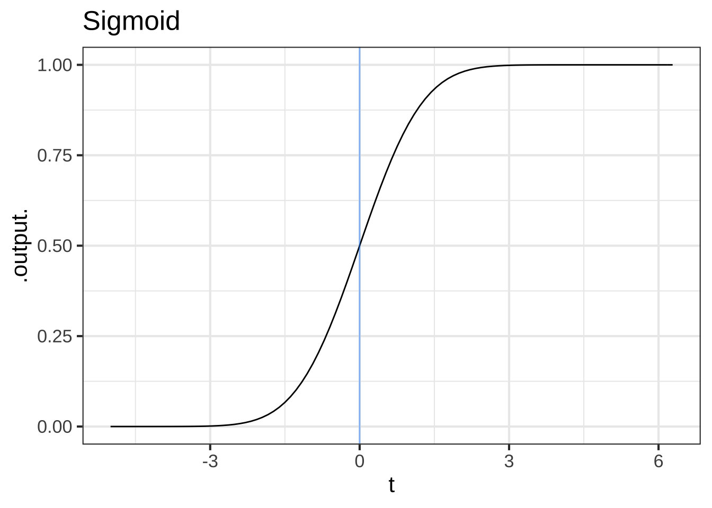
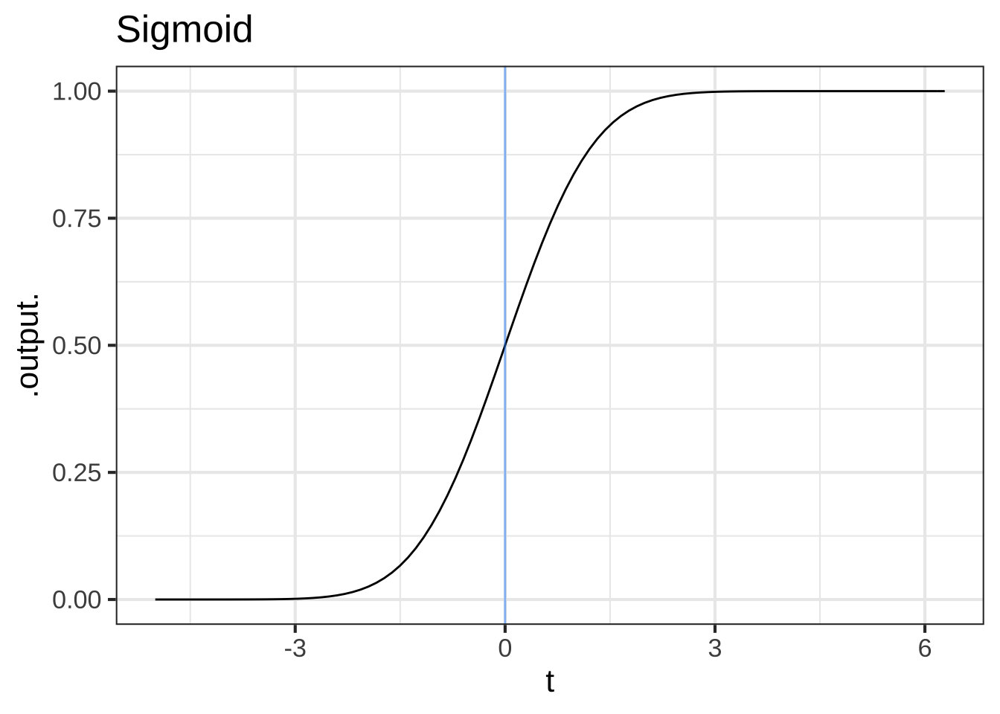

Chapter 20 Evanescent h
Our goal in this chapter is to motivate the differentiation rules presented in Chapter 17 for the naked modeling functions. Recall that the slope-function operator can be written as a ratio of rise-over-run: \[{\cal D}_t f(t) \equiv \frac{f(t+h) - f(t)}{h}\] where \(h\) is the length of the “run.” The idea of the instantaneous slope function is to make \(h\) as small as possible.
In the very early days of calculus, the vanishing \(h\) was described as “evanescent.” (Dictionary definition: “tending to vanish like vapor.”21) Another good image of \(h\) becoming as small as possible comes from the same University of Oxford mathematician whose poem The Jabberwocky we considered earlier. In Alice in Wonderland, Dodgson introduced the character of the Cheshire Cat.

Figure 20.1: Vanishing \(h\) in the form of the Chesire Cat from Alice in Wonderland.
“All right,” said the Cat; and this time it vanished quite slowly, beginning with the end of the tail, and ending with the grin, which remained some time after the rest of it had gone.
“Well! I’ve often seen a cat without a grin,” thought Alice; “but a grin without a cat! It’s the most curious thing I ever saw in my life!”
Start our story with two of the basic modeling functions that, like the characters from Alice in Wonderland, have considerable “personality”: the sinusoid (sin()) and the sigmoid (pnorm()).
 

Figure 20.2: The naked sinusoid and sigmoidal functions. A vertical blue line has been added to mark the input \(t=0\)
The computer can easily construct the slope functions for the sinusoid and sigmoid, which we’ll call Dsin() and Dsigma() respectively.
Dsin <- makeFun(( sin(t+h) - sin(t))/h ~ t, h=0.1)
Dsigma <- makeFun((pnorm(t+h) - pnorm(t))/h ~ t, h=0.1)In the tilde expression handed to makeFun(), we’ve identified t as the name of the input and given a “small” default value to the h parameter. But R recognizes that both Dsin() and Dsigma() are functions of two variables, t and h, as you can see in the parenthesized argument list for the functions.
Dsin## function (t, h = 0.1)
## (sin(t + h) - sin(t))/hDsigma## function (t, h = 0.1)
## (pnorm(t + h) - pnorm(t))/hThis is a nuisance, since when using the slope functions we will need always to think about h, a number that we’d like to describe simply as “small,” but for which we always need to provide a numerical value. A surprisingly important question in the development of calculus is, “What can we do to avoid the nuisance?” To find out, let’s look at Dsin() and Dsigma() for a range of values of h, as in Figure 20.3.


Figure 20.3: The slope functions of the sinusoid and sigmoid. Each curve shows the slope function for a particular numerical choice of h. Both panels show \(h=2, 1, 0.5, 0.1, 0.01, 0.001, 0.0001, 0.00001, 0.000001\).
Some observations from this numerical experiment:
As \(h\) gets very small, the slope function doesn’t depend on the exact value of \(h\).
This will provide a way for us, eventually, to discard \(h\) so that the slope function will not need an \(h\) argument.
For small \(h\), we have \({\cal D}_t \sin(t) = \sin(t + \pi/2) = \cos(t)\). That is, taking the slope function of a sinusoid gives another sinusoid, shifted left by \(\pi/2\) from the original. Or, in plain words, for small \(h\)H the cosine is the slope function of the sine.
For small \(h\), we have \({\cal D}_t \text{pnorm}(t) = \text{dnorm(t)}\). That is, for small \(h\) the hump function is the slope function of the sigmoid function.
You can confirm these last two statements by comparison with the original functions, especially the alignment of the peaks of the slope functions with respect to the peak of the sinusoid and the half-way point of the sigmoid.
Here you use \(t\) as the name of the input and \(\partial_t\) as the notation for differentiation. Previously in this block you used \(x\) as the input name and \(\partial_x\) for differentiation. Are they the same?
Mathematically, the name of the input makes no difference whatsoever. We could call it \(x\) or \(t\) or \(y\) or Josephina. What’s important is that the name be used consistently on the left and right sides of \(\equiv\), and that the derivative symbol \(\partial\) has a subscript that identifies the with-respect-to input. All these are the same statement mathematically:
\[\partial_x\, x = 1\ \ \ \ \partial_t\, t = 1\ \ \ \ \partial_y\, y = 1\ \ \ \ \partial_\text{Josephina} \text{Josephina} = 1\] Admittedly, the last one is hard to read.
When we look at derivatives of functions of multiple variables we will need to be thoughtful about our choice of the with-respect-to input. But we want you to get used to seeing different input names used for differentiation.
Now consider the slope functions of the logarithm and exponential functions.


Figure 20.4: The slope functions of the logarithm and exponential.
These numerical experiments with the logarithm and exponential functions are more evidence that, as \(h\) gets small, the slope function doesn’t depend on \(h\). And, we find that:
- For small \(h\), the slope function of the logarithm is a power-law function: \({\cal D}_t \ln(t) = \frac{1}{t}\).
- For small \(h\), the slope function of the exponential is the exponential itself: \({\cal D}_t e^x = e^x\).
You can confirm these by evaluating the slope function of the exponential at \(t=0\) and \(t=1\), and the slope function of the logarithm at \(t= 2, 1, 1/2, 1/4, 1/8.\)
Such numerical experiments on the other naked modeling functions reveal the patterns presented in Chapter 17
20.1 Role of h
In motivating differentiation of the naked modeling functions, we introduced a quantity \(h\) and then ignored it, saying that it doesn’t really matter so long as it is “small.” A reasonable person might wonder what “small” really means, and why we needed to introduce \(h\) in the first place if we were eventually going to ignore it.
One reason is that “small” and “zero,” although related, are different. For example, refering to the slope functions Dsin() and Dsigma() that we created in an early example in this chapter, we see that setting \(h\) to zero does not get us where we need to be:
Dsin(t=1, h=0)
Dsigma(t=0, h=0)In NaN, you can hear the echo of your fourth-grade teacher reminding you that it is illegal to divide by zero.
Think of evanescent \(h\) as the vapor in the definition of “evanescent”: “tending to vanish like vapor.” This vapor is the solvent in paint. You don’t want the solvent once the paint is on the wall; wet paint is a nuisance. But getting the paint from the can to the wall absolutely needs the solvent.
We used the solvent \(h\) earlier in the chapter in the numerical experiments that led us to the derivatives of the naked modeling functions, for instance \(\partial_x e^x = e^x\) or \(\partial_x \sin(x) = \cos(x)\). Eventually, we’ll construct an \(h\)-free theory of differentiation, reducing the process to a set of algebraic rules in which \(h\) never appears. With this as our goal, let’s continue using \(h\) for a while to find some additional useful facts about derivatives.
20.2 Derivatives of linear combinations
Linear combination is one of the ways in which we make new functions from existing functions. As you recall, linear combination involves scaling a function and adding the scaled functions. We can easily use \(h\) to show what is the result of differentiating a linear combination of functions. We’ll use \(f(x)\) and \(g(x)\) as the names that could stand for any function whatsoever. And we’ll let \(b\) be the name of a scalar. First, let’s figure out what is \(\partial_x\, b f(x)\), Going back to writing \(\partial_x\) in terms of a slope function: \[\partial_x\, b\,f(x) = \frac{b\, f(x + h) - b\,f(x)}{h}\\ \ \\ = b \frac{f(x+h) - f(x)}{h} = b\, \partial_x f(x)\] In other words, if we know the derivative \(\partial_x\, f(x)\), we can easily find the derivative of any scaled version of \(f()\).
Now consider the derivative of the sum of two functions, \(f(x)\) and \(g(x)\): \[\partial_x\, \left[f(x) + g(x)\right] =\\ \ \\ =\frac{\left[f(x + h) + g(x + h)\right] - \left[f(x) + g(x)\right]}{h} = \\ \ \\ = \frac{\left[f(x+h) -f(x)\right] + \left[g(x+h) - g(x)\right]}{h}\\ \ \\ = \frac{\left[f(x+h) -f(x)\right]}{h} + \frac{\left[g(x+h) - g(x)\right]}{h}\\ \ \\ = \partial_x\, f(x) + \partial_x\, g(x)\]
Using these two rules together, we can differentiate any linear combination of functions in terms of the differentiated functions themselves:
\[\partial_x\ \left[\strut a_1 g_1(x) + a_2 g_2(x) + a_3 g_3(x) + \cdots\right] =\ \ \ \ \ \ \ \ \ \ \\ \ \\ \ \ \ \ \ \ \ \ \ a_1 \partial_x\, g_1(x) + a_2 \partial_x\, g_2(x) + a_3 \partial_x\, g_3(x) + \cdots\]
Because of the way that \(\partial_x\) can be “passed through” a linear combination, mathematicians say that differentiation is a linear operator. Consider this new fact about differentiation as a down payment on what will eventually become a complete theory telling us how to differentiate a product of two functions or the composition of two functions.
In 1734, famous philosopher George Berkeley (1685-1753) published a long-titled book: The Analyst: A Discourse Addressed to an Infidel Mathematician: Wherein It Is Examined Whether the Object, Principles, and Inferences of the Modern Analysis Are More Distinctly Conceived, or More Evidently Deduced, Than Religious Mysteries and Points of Faith. In The Analyst, Berkeley took issue with the arguments of that time that it is legitimate to divide by \(h\) when, ultimately, \(h\) will be replaced by zero. Calling \(h\) an “evanescent increment,” he asked,
“And what are these same evanescent Increments? They are neither finite Quantities nor Quantities infinitely small, nor yet nothing. May we not call them the ghosts of departed quantities?”
Interesting, Berkeley believed that the ghost of \(h\) yielded correct results. His objection was that the framers of calculus had made two, canceling errors.
“[B]y virtue of a two fold mistake you arrive, though not at science, yet truth.”
Berkeley was saying that calculus had not yet been put on a solid logical foundation. It was to be more than a century after Berkeley’s death until this work was accomplished. Once accomplished, the results that had been claimed true all along were confirmed.
Diffs/tree-harvest.Rmd
dnorm(x) is - x *dnorm(x) by using the differencing operator with small \(h\).
20.3 Derivatives of the basic modeling functions
The basic modeling functions are the same as the naked modeling functions, but with bare \(x\) replaced by \(\line(x)\). By convention, there are different ways of writing \(\line(x)\) for the different naked functions, for instance:
$$ \ \
(x) (2 (x-x_0)/P)\ (x) (k x)\ x^2 (mx + b)^2\ 1/x 1/(mx + b)\ (x) (a x + b)\ $$
The general rule for the derivatives of the basic modeling functions is \[\partial f(\line(x)) = \partial_x \line(x) \times [\partial_x f]\left(\strut\line(x)\right)\]
To illustrate:
- \(\partial_x e^{kx} = k\, e^{kx}\)
- \(\partial_x \sin(2\pi (x-x_0)/P) = \frac{2\pi}{P} \sin(2\pi (x-x_0)/P)\)
- \(\partial_x (mx + b)^2 = m\, 2 (m x + b) = 2 m^2 x + m^2 b\)
- \(\partial_x \frac{1}{mx + b} = - \frac{m}{(mx + b)^2}\)
- \(\partial_x \ln(a x + b) = a/(ax+b)\)
- \(\partial_x \text(dnorm)(x, mn, sd) = - \frac{x}{sd} \text(dnorm)(x, mn, sd)\)
The notation for the basic hump and sigmoidal functions has two equivalent formulations:
- hump: \(\dnorm\left(\frac{x-mn}{sd}\right)\) or \(\dnorm(x, mn, sd)\)
- sigmoid: \(\pnorm\left(\frac{x-mn}{sd}\right)\) or \(\pnorm(x, mn, sd)\)
The derivative of the sigmoid can be written in either of two equivalent ways:
- \(\partial_x \pnorm\left(\frac{x-mn}{sd}\right) = \frac{1}{sd}\, \pnorm\left(\frac{x-mn}{sd}\right)\)
- \(\partial_x \pnorm(x, mn, sd) = \dnorm(x, mn, sd)\)
It’s very easy to get confused by this.